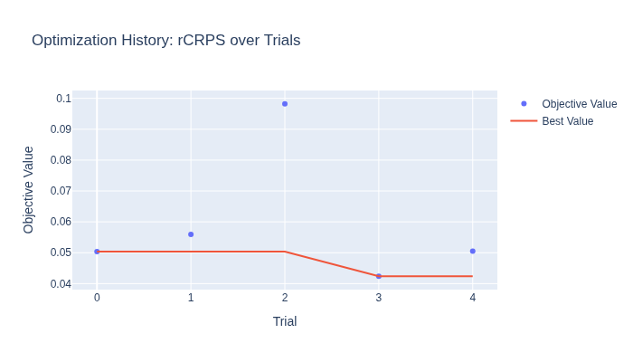
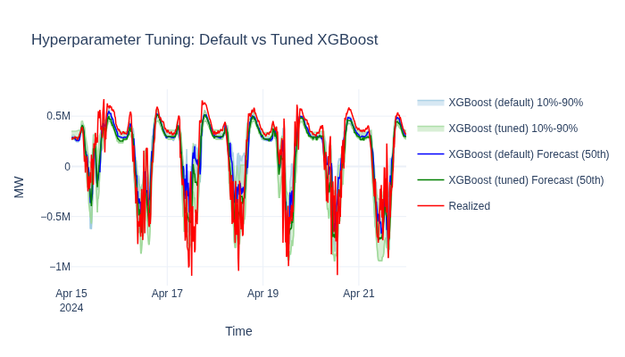

Hyperparameter Tuning with Optuna#
OpenSTEF integrates with Optuna for Bayesian hyperparameter optimization. Every forecaster in OpenSTEF declares sensible search bounds on its hyperparameters — you just choose which ones to activate for tuning.
What you’ll learn:
Why models ship with built-in search spaces
How to activate, deactivate, and customize tunable parameters
How to change the optimization metric (e.g. rCRPS for probabilistic scoring)
How to compare an untuned baseline against the tuned model
Note
This tutorial runs only 5 trials for fast execution.
Increase n_trials for production use.
Key API references:
HyperparameterTuner
· XGBoostHyperParams
· FloatRange / IntRange
Load the dataset#
from datetime import datetime, timedelta
from openstef_core.testing import load_liander_dataset
from openstef_core.types import LeadTime, Q
dataset = load_liander_dataset()
train_start = datetime.fromisoformat("2024-03-01T00:00:00Z")
train_end = train_start + timedelta(days=45)
forecast_end = train_end + timedelta(days=7)
train_dataset = dataset.filter_by_range(start=train_start, end=train_end)
predict_dataset = dataset.filter_by_range(
start=train_end - timedelta(days=14),
end=forecast_end,
)
print(f"Training: {train_dataset.data.shape[0]:,} rows")
print(f"Predict: {predict_dataset.data.shape[0]:,} rows")
Training: 4,320 rows
Predict: 2,016 rows
Understanding built-in search spaces#
Each forecaster’s HyperParams class uses Python’s Annotated type hints
to declare valid search bounds on every parameter. For example,
XGBoostHyperParams defines:
n_estimators: Annotated[int, IntRange(50, 500)] = 100
learning_rate: Annotated[float, FloatRange(0.01, 0.5, log=True)] = 0.3
max_depth: Annotated[int, IntRange(1, 15)] = 6
subsample: Annotated[float, FloatRange(0.5, 1.0)] = 1.0
These ranges define where Optuna can search, but tuning is not active
by default. The tune=True flag explicitly activates each parameter.
This design means you always get sensible bounds without accidentally
tuning everything.
Let’s see the default search space — with nothing activated:
from openstef_core.mixins.param_ranges import FloatRange, IntRange
from openstef_models.models.forecasting.xgboost_forecaster import XGBoostHyperParams
default_hp = XGBoostHyperParams()
default_space = default_hp.get_search_space()
print(f"Default tunable parameters: {len(default_space)}")
print("(All parameters use their fixed defaults until you opt in with tune=True)")
Default tunable parameters: 0
(All parameters use their fixed defaults until you opt in with tune=True)
Customizing the search space#
To activate tuning on a parameter, pass a range with tune=True.
You can also narrow or widen the bounds, or leave bounds as None to
inherit the class-level defaults from the Annotated metadata.
Activate with custom bounds:
learning_rate=FloatRange(0.01, 0.3, log=True, tune=True)
Activate with default bounds (inherits from Annotated metadata):
subsample=FloatRange(tune=True)
Keep a parameter fixed (don’t pass a range — just a plain value or omit it):
max_depth=6 # fixed, not tuned
Let’s configure XGBoost with 4 tunable parameters and keep reg_alpha
fixed at a known-good value:
from openstef_models.presets import ForecastingWorkflowConfig, create_forecasting_workflow
config = ForecastingWorkflowConfig(
model_id="tuning_demo",
model="xgboost",
horizons=[LeadTime.from_string("PT36H")],
quantiles=[Q(0.5), Q(0.1), Q(0.9)],
target_column="load",
temperature_column="temperature_2m",
relative_humidity_column="relative_humidity_2m",
wind_speed_column="wind_speed_10m",
radiation_column="shortwave_radiation",
pressure_column="surface_pressure",
xgboost_hyperparams=XGBoostHyperParams(
# Tuned — custom bounds
learning_rate=FloatRange(0.01, 0.3, log=True, tune=True), # pyright: ignore[reportCallIssue]
n_estimators=IntRange(50, 300, tune=True),
# Tuned — inherits class-level bounds [1, 15]
max_depth=IntRange(tune=True),
# Tuned — custom narrower bounds
subsample=FloatRange(0.6, 1.0, tune=True),
# Fixed — not tuned
reg_alpha=0.1,
),
mlflow_storage=None,
verbosity=0,
)
space = config.xgboost_hyperparams.get_search_space()
print(f"Active search space ({len(space)} parameters):")
for name, param in space.items():
if isinstance(param, (FloatRange, IntRange)):
scale = " [log]" if param.log else ""
print(f" {name:20s}: {type(param).__name__} [{param.low} — {param.high}]{scale}")
Active search space (4 parameters):
n_estimators : IntRange [50 — 300]
learning_rate : FloatRange [0.01 — 0.3] [log]
max_depth : IntRange [1 — 15]
subsample : FloatRange [0.6 — 1.0]
Changing the tuning metric#
By default, HyperparameterTuner optimizes R2 on the median quantile.
For probabilistic forecasts, the relative Continuous Ranked Probability
Score (rCRPS) is a better choice — it evaluates the full quantile
distribution, not just the median.
To use rCRPS, add RCRPSProvider to the config’s evaluation_metrics
and set metric_name="rCRPS" with direction="minimize" (lower is better):
from openstef_beam.evaluation.metric_providers import ObservedProbabilityProvider, R2Provider, RCRPSProvider
config_with_rcrps = config.model_copy(
update={"evaluation_metrics": [R2Provider(), ObservedProbabilityProvider(), RCRPSProvider()]}
)
Train an untuned baseline#
Before tuning, let’s train a model with the default hyperparameters so we can measure the improvement.
baseline_config = config_with_rcrps.model_copy(
update={
"xgboost_hyperparams": XGBoostHyperParams(reg_alpha=0.1),
}
)
baseline_workflow = create_forecasting_workflow(baseline_config)
baseline_result = baseline_workflow.fit(train_dataset)
baseline_forecast = baseline_workflow.predict(predict_dataset, forecast_start=train_end)
baseline_r2 = baseline_result.metrics_val.get_metric(quantile=Q(0.5), metric_name="R2")
baseline_rcrps = baseline_result.metrics_val.get_metric(quantile="global", metric_name="rCRPS")
print(f"Baseline R2: {baseline_r2:.4f}")
print(f"Baseline rCRPS: {baseline_rcrps:.4f}")
Baseline R2: 0.7932
Baseline rCRPS: 0.0504
Run the Optuna study#
HyperparameterTuner.fit_with_tuning() runs the study and trains a final
workflow using create_forecasting_workflow on the full training set with the best hyperparameters.
The first trial always evaluates the default values so the search starts
from a known baseline.
import optuna
from openstef_models.integrations.optuna import HyperparameterTuner
optuna.logging.set_verbosity(optuna.logging.WARNING)
tuner = HyperparameterTuner(
config=config_with_rcrps,
train_dataset=train_dataset,
create_workflow=create_forecasting_workflow,
target_quantile="global",
metric_name="rCRPS",
direction="minimize",
n_trials=5,
seed=42,
)
tuning_result = tuner.fit_with_tuning(show_progress_bar=False)
print(f"Trials completed: {len(tuning_result.study.trials)}")
print(f"Best rCRPS: {tuning_result.study.best_value:.4f}")
print(f"Best params: {tuning_result.study.best_params}")
Trials completed: 5
Best rCRPS: 0.0424
Best params: {'n_estimators': 200, 'learning_rate': 0.11114989443094977, 'max_depth': 1, 'subsample': 0.9879639408647978}
Inspect the best hyperparameters#
best_hp = tuning_result.best_config.xgboost_hyperparams
best_params = tuning_result.study.best_params
print("Final hyperparameters (tuned values marked):")
for field in type(best_hp).model_fields:
value = getattr(best_hp, field)
marker = " <- tuned" if field in best_params else ""
print(f" {field:20s}: {value}{marker}")
Final hyperparameters (tuned values marked):
n_estimators : 200 <- tuned
learning_rate : 0.11114989443094977 <- tuned
max_depth : 1 <- tuned
min_child_weight : 1
gamma : 0
objective : pinball_loss
evaluation_metric : mean_pinball_loss
reg_alpha : 0.1
reg_lambda : 1
max_delta_step : 0
max_leaves : 0
grow_policy : depthwise
max_bin : 256
num_parallel_trees : 1
subsample : 0.9879639408647978 <- tuned
colsample_bytree : 1.0
colsample_bylevel : 1.0
colsample_bynode : 1.0
tree_method : auto
random_state : 42
early_stopping_rounds: None
use_target_scaling : True
Visualize optimization history#
The optimization history shows how rCRPS decreased over trials. With only
5 trials results are noisy — increase n_trials for smoother convergence.

Compare: untuned vs tuned#
Plot both models on the same chart to visualize the improvement. Once you’re happy with the tuned parameters, run a Backtesting Quickstart to measure the gain over a realistic operational timeline.

tuned_rcrps = tuning_result.study.best_value
print(f"{'Model':<20} {'rCRPS':>10}")
print(f"{'':-<20} {'':-^10}")
print(f"{'XGBoost (default)':<20} {baseline_rcrps:>10.4f}")
print(f"{'XGBoost (tuned)':<20} {tuned_rcrps:>10.4f}")
print(f"{'Improvement':<20} {baseline_rcrps - tuned_rcrps:>10.4f}")
Model rCRPS
-------------------- ----------
XGBoost (default) 0.0504
XGBoost (tuned) 0.0424
Improvement 0.0080
Next steps#
Ensemble Forecasting — combine tuned models into an ensemble for even better accuracy.
Backtesting Quickstart — validate tuned parameters on longer historical windows.